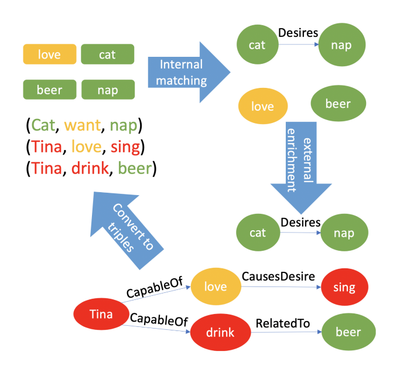
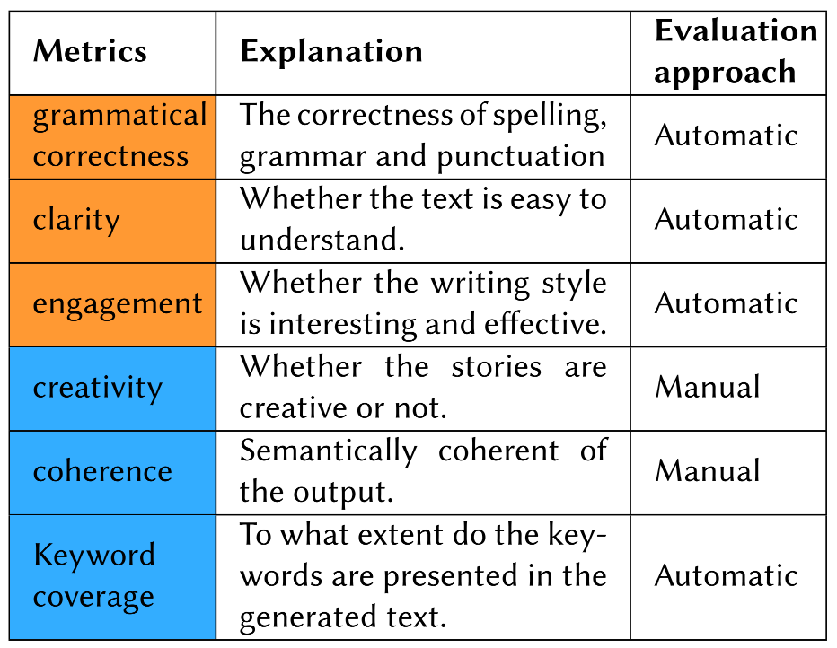

Motivation
- 语言模型生成的文本语法、句法和标点错误极少，但蕴含的常识信息更少，生成的内容难以控制；
- 利用知识图谱embedding融入知识的方法较为复杂且耗时，而知识图谱更新快；
Related work
Story generation
- 故事生成是一个knowled-intensive process，开放域的故事生成没有pre-defined domain model；
- 故事生成要求故事要novel且appropriate，对创造性和原创性有更高的要求；
- 预训练语言模型无法利用隐含的知识来生成令人信服的故事结尾。
With graph embeddings
- 利用知识图谱丰富从图片中提取的词语来生成故事；
- 使用知识图谱丰富输入文本为文本树来解决NLP任务；
- 建立诗歌知识图谱来进行关键词匹配等来生成中国传统诗歌；
- 利用知识图谱收集三元组来获得相关主题用于智能对话系统。
与以上不同的是graph to text没有突出写作的创造性。
Framework
Task
从提取的三元组集合中生成五句话的故事。输入是用户指定的关键词集合。
Framework
- 包含知识增强层和故事生成层，其中三元组为连接两个层的接口，同时也是生成故事的prompt；
- 三元组是从知识图谱或者故事语料中提取的；模型首先检查关键词的关系，然后使用知识图谱增加额外信息来生成三元组；
- 任务生成分为两个阶段：
- 模型finetune
- 三元组提取：从故事中提取三元组并作为每个故事的prefix来让模型学习利用三元组生成故事的能力。提取三元组的过程涉及到指代消解、词根化等细节。同时故事title也作为prefix加入到要编码的句子中；
- Finetune：GPT-2更多用于长文本的生成，因此加入了flag确定短文的开始和结束，让模型可以自动提取短文内容；
- 故事生成
三元组的entity和relation给予了模型故事的topic和plot。- 知识增强：给出一个知识图谱数据集，具有足够多的实体和关系，同时关系具有权重帮助模型寻找更合理的路径来生成故事；
 - 文本生成：将三元组作为prefix生成故事。
- 知识增强：给出一个知识图谱数据集，具有足够多的实体和关系，同时关系具有权重帮助模型寻找更合理的路径来生成故事；
- 模型finetune
Dataset
ROCStories：包含一万个短故事，每个故事有个标题和五句话的内容。
Metrics
